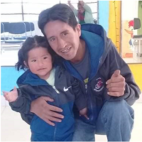
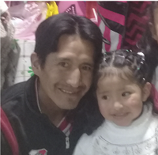
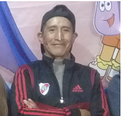
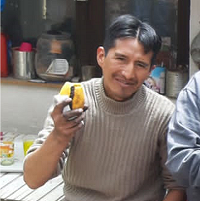

Primer aniversario de su partida
"Siempre vivirás en nuestros corazones"
Juan 11:25-26
«Yo soy la resurrección y la vida; el que cree en mí, aunque esté muerto, vivirá. Y todo aquel que vive y cree en mí, no morirá eternamente.»
Con profundo amor invitamos a familiares y amigos a acompañarnos en la ceremonia conmemorativa por el primer aniversario de la partida de nuestro querido Hugo Alfredo Apaza Tarquino.




Su presencia y sus oraciones son un consuelo para nuestra familia. Agradecemos que nos acompañen a recordar con amor la vida de quien siempre permanecerá en nuestros corazones.